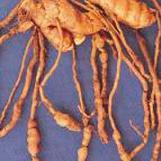

HORT282 :: Lecture 01 :: GINGER

GINGER
Ginger: Zingiber officinale Rosc Family: Zingiberaceae
Ginger is a herbaceous perennial, the rhizomes of which are used as a spice. India is a leading producer of ginger in the world and during 2006-07 the country produced 3.70 lakh tonnes of the spice from an area of 1.06 lakh hectares. Ginger is cultivated in most of the states in India. However, states namely Kerala, Meghalaya, Arunachal Pradesh, Mizoram, Sikkim, Nagaland and Orissa together contribute 70 per cent to the country’s total production.
Botany
It is a herbaceous perennial with underground rhizomes having serial leafy shoots of 0.5 to 0.75 m height, sheathy, linear with 15 cm. Flowers borne on a spike, condensed, oblong and cylindrical with numerous scar bracts, yellow with dark purplish spots, bisexual, epigynous, stamens only one, ovary inferior, three carpellary, fruit is an oblong capsule, seeds glabrous and fairly large.
Climate and soil
Ginger grows well in warm and humid climate and is cultivated from sea level to an altitude of 1500 m above sea level. Ginger can be grown both under rain fed and irrigated conditions. For successful cultivation of the crop, a moderate rainfall at sowing time till the rhizomes sprout, fairly heavy and well distributed showers during the growing period and dry weather for about a month before harvesting are necessary. Ginger thrives best in well drained soils like sandy loam, clay loam, red loam or lateritic loam. A friable loam rich in humus is ideal. However, being an exhausting crop it is not desirable to grow ginger in the same soil year after year.
Varieties
Several cultivars of ginger are grown in different ginger growing areas in India and they are generally named after the localities where they are grown. Some of the prominent indigenous cultivars are Maran, Kuruppampadi, Ernad, Wayanad, Himachal and Nadia. Exotic cultivars such as Rio-de-Janeiro have also become very popular among cultivators. High altitude research station, Pottangi, Orissa has released three improved varieties Suprabha, Suruchi and Surari.
Season
The best time for planting ginger in the West Coast of India is during the first fortnight of May with the receipt of pre monsoon showers. Under irrigated conditions, it can be planted well in advance during the middle of February or early March. Burning the surface soil and early planting with the receipt of summer showers results in higher yield and reduces disease incidence.
Land Preparation
The land is to be ploughed 4 to 5 times or dug thoroughly with receipt of early summer showers to bring the soil to fine tilth. Beds of about 1 m width, 15 cm height and of convenient length are prepared with an inter-space of 50 cm in between beds. In the case of irrigated crop, ridges are formed 40 cm apart. In areas prone to rhizome rot disease and nematode infestations, solarization of beds for 40 days using transparent polythene sheets is recommended.
Planting
Ginger is propagated by portions of rhizomes known as seed rhizomes. Carefully preserved seed rhizomes are cut into small pieces of 2.5-5.0 cm length weighing 20-25 g each having one or two good buds. The seed rate varies from region to region and with the method of cultivation adopted.
In Kerala, the seed rate varies from 1500 to 1800 kg/ha. At higher altitudes the seed rate may vary from 2000 to 2500 kg/ha. The seed rhizomes are treated with Mancozeb 0.3% (3 g/L of water) for 30 minutes, shade dried for 3-4 hours and planted at a spacing of 20-25 cm along the rows and 20-25 cm between the rows. The seed rhizome bits are placed in shallow pits prepared with a hand hoe and covered with well rotten farm yard manure and a thin layer of soil and levelled.
Manuring
At the time of planting, well decomposed cattle manure or compost @ 25-30 tonnes/ha has to be applied either by broadcasting over the beds prior to planting or applied in the pits at the time of planting. Application of neem cake @ 2 tonnes/ha at the time of planting helps in reducing the incidence of rhizome rot disease/ nematode and increasing the yield.
The recommended dose of fertilizer for ginger is 75 kg N, 50 kg P2O5 and 50 kg K2O per ha. The fertilizers are to be applied in split doses (Table 3). The beds are to be earthed up, after each top dressing with the fertilizers. In zinc deficient soils basal application of zinc fertilizer up to 6 kg zinc/ha (30 kg of zinc sulphate/ha) gives good yield.
Fertilizer schedule for ginger (per ha)
Fertilizer |
Basal application |
After 45 days |
After 90 days |
N |
- |
37.5 kg |
37.5 kg |
P2O5 |
50 kg |
- |
- |
K2O |
- |
25 kg |
25 kg |
Compost/ Cow dung |
25-30 tonnes |
- |
- |
Neem cake |
2 tonnes |
- |
- |
Ginger Mulching
Mulching the beds with green leaves/organic wastes is essential to prevent soil splashing and erosion of soil due to heavy rain. It also adds organic matter to the soil, checks weed emergence and conserves moisture during the latter part of the cropping season. The first mulching is done at the time of planting with green leaves @ 10-12 tonnes/ha. Mulching is to be repeated @ 7.5 tonnes/ha at 45 and 90 days after planting, immediately after weeding, application of fertilizers and earthing up.
Intercultivation
Weeding is done just before fertilizer application and mulching; 2-3 weedings are required depending on the intensity of weed growth. Proper drainage channels are to be provided when there is stagnation of water.
Earthing up is essential to prevent exposure of rhizomes and provide sufficient soil volume for free development of rhizomes. It is done at 45 and 90 days after planting immediately after weeding and application of fertilizers.
Crop rotation and mixed cropping
Crop rotation is generally followed in ginger. The crops most commonly rotated with ginger are tapioca, ragi, paddy, gingelly, maize and vegetables. In Karnataka, ginger is also mix cropped with ragi, red gram and castor. Ginger is also grown as an intercrop in coconut, arecanut, coffee and orange plantations in Kerala and Karnataka. However, crop rotation using tomato, potato, chillies, brinjal and peanut should be avoided, as these plants are hosts for the wilt causing organism, Ralstonia solanacearum.
Plant protection Diseases
Soft rot
Soft rot is the most destructive disease of ginger which results in total loss of affected clumps. The disease is soil borne and is caused by Pythium aphanidermatum. P. vexans and P. myriotylum are also reported to be associated with the disease. The fungus multiplies with build up of soil moisture with the onset of south west monsoon. Younger sprouts are the most susceptible to the pathogen. The infection starts at the collar region of the pseudo stem and progresses upwards as well as downwards. The collar region of the affected pseudo stem becomes water soaked and the rotting spreads to the rhizome resulting in soft rot. At a later stage root infection is also noticed. Foliar symptoms appear as light yellowing of the tips of lower leaves which gradually spreads to the leaf blades. In early stages of the disease, the middle portion of the leaves remain green while the margins become yellow. The yellowing spreads to all leaves of the plant from the lower region upwards and is followed by drooping, withering and drying of pseudo stems.
Treatment of seed rhizomes with Mancozeb 0.3% for 30 minutes before storage and once again before planting reduces the incidence of the disease. Cultural practices such as selection of well drained soils for planting is important for managing the disease, since stagnation of water predisposes the plant to infection. Seed rhizomes are to be selected from disease free gardens, as the disease is also seed borne. Application of Trichoderma harzianum along with Neem cake @ 1 kg/bed helps in preventing the disease. Once the disease is located in the field, removal of affected clumps and drenching the affected and surrounding beds with mancozeb 0.3% checks the spread of the disease.
Bacterial wilt
Bacterial wilt caused by Ralstonia solanacearum Biovar-3 is also a soil and seed borne disease that occurs during south west monsoon. Water soaked spots appear at the collar region of the pseudo stem and progresses upwards and downwards. The first conspicuous symptom is mild drooping and curling of leaf margins of the lower leaves which spread upwards. Yellowing starts from the lowermost leaves and gradually progresses to the upper leaves. In the advanced stage, the plants exhibit severe yellowing and wilting symptoms. The vascular tissues of the affected pseudo stems show dark streaks. The affected pseudo stem and rhizome when pressed gently extrudes milky ooze from the vascular strands. Ultimately rhizomes rot.
The cultural practices adopted for managing soft rot are also to be adopted for bacterial wilt. Seed rhizomes must be taken from disease free fields for planting. The seed rhizomes may be treated with Streptocycline 200 ppm for 30 minutes and shade dried before planting. Once the disease is noticed in the field all beds should be drenched with Bordeaux mixture 1% or copper oxychloride 0.2%.
Leaf spot
Leaf spot is caused by Phyllosticta zingiberi and the disease is noticed on the leaves from July to October. The disease starts as water soaked spot and later turns as a white spot surrounded by dark brown margins and yellow halo. The lesions enlarge and adjacent lesions coalesce to form necrotic areas. The disease spreads through rain splashes during intermittent showers. The incidence of the disease is severe in ginger grown under exposed conditions. The disease can be controlled by regular spraying of Bordeaux mixture 1% or mancozeb 0.2%.
Nematode pests
Root knot (Meloidogyne spp.), burrowing (Radopholus similis) and lesion (Pratylenchus spp.) nematodes are important nematode pests of ginger. Stunting, chlorosis, poor tillering and necrosis of leaves are the common aerial symptoms. Characteristic root galls and lesions that lead to rotting are generally seen in roots. The infested rhizomes have brown, water soaked areas in the outer tissues. Nematode infestation aggravates rhizome rot disease. The nematodes can be controlled by treating infested rhizomes with hot water (50°C) for 10 minutes, using nematode free seed rhizomes and solarizing ginger beds for 40 days. In areas were root knot nematode population is high, the resistant variety IISR-Mahima may be cultivated. Pochonia chlamydosporia, a nematode biocontrol agent can be incorporated in ginger beds (20 g/bed at 106 cfu/g) at the time of sowing.
Insect pests
Shoot borer
The shoot borer (Conogethes punctiferalis) is the most serious pest of ginger. The larvae bore into pseudostems and feed on internal tissues resulting in yellowing and drying of leaves of infested pseudostems. The presence of a bore-hole on the pseudo stem through which frass is extruded and the withered and yellow central shoot is a characteristic symptom of pest infestation. The adult is a medium sized moth with a wingspan of about 20 mm; the wings are orange-yellow with minute black spots. Fully grown larvae are light brown with sparse hairs. The pest population is higher in the field during September-October.
The shoot borer can be managed by spraying Malathion (0.1%) at 21 day intervals during July to October. The spraying is to be initiated when the first symptom of pest attack is seen on the top most leaves on the pseudostem. An integrated strategy involving pruning and destroying freshly infested pseudostems during July-August (at fortnightly intervals) and spraying Malathion (0.1%) during September-October (at monthly intervals) is also effective against the pest.
Rhizome scale
The rhizome scale (Aspidiella hartii) infests rhizomes in the field (at later stages) and in storage. Adult (female) scales are circular (about 1 mm diameter) and light brown to grey and appear as encrustations on the rhizomes. They feed on sap and when the rhizomes are severely infested, they become shriveled and desiccated affecting its germination. The pest can be managed by treating the seed material with Quinalphos (0.075%) (for 20-30 minutes) before storage and also before sowing in case the infestation persists. Severely infested rhizomes are to be discarded before storage.
Minor pests
Larvae of leaf roller (Udaspes folus) cut and fold leaves and feed from within. The adults are medium sized butterflies with brownish black wings with white spots; the larvae are dark green. A spray with carbaryl (0.1%) or dimethoate (0.05%) may be undertaken when the infestation is severe.
Root grubs occasionally feed on tender rhizomes, roots and base of pseudostems causing yellowing and wilting of shoots. The pest can be controlled by drenching the soil with chloropyriphos (0.075%).
Harvesting and curing
The crop is ready for harvest in about 8 months after planting when the leaves turn yellow, and start drying up gradually. The clumps are lifted carefully with a spade or digging fork and the rhizomes are separated from the dried up leaves, roots and adhering soil.
For preparing vegetable ginger, harvesting is done from sixth month onwards. The rhizomes are thoroughly washed in water and sun-dried for a day.
For preparing dry ginger, the produce (harvested after 8 months) is soaked in water for 6-7 hours. The rhizomes are then rubbed well to clean the extraneous matter. After cleaning, the rhizomes are removed from water and the outer skin is removed with bamboo splinters having pointed ends. Deep scraping may be avoided to prevent damage of oil cells which are just below the outer skin. The peeled rhizomes are washed and dried in sun uniformly for 1 week. The dry rhizomes are rubbed together to get rid of the last bit of skin or dirt. The yield of dry ginger is 19.25% of fresh ginger depending on the variety and location where the crop is grown.
Fresh ginger (with relatively low fibre) harvested at 170-180 days after planting can be used for preparing salted ginger. Tender rhizomes with a portion of the pseudostem may be washed thoroughly and soaked in 30% salt solution containing 1% citric acid. After 14 days it is ready for use and can be stored under refrigeration.
Storage of Seed rhizomes
In order to obtain good germination, the seed rhizomes are to be stored properly in pits under shade. For seed material, bold and healthy rhizomes from disease free plants are selected immediately after harvest. For this purpose, healthy and disease-free clumps are marked in the field when the crop is 6-8 months old and still green. The seed rhizomes are treated with a solution containing quinalphos 0.075% and mancozeb 0.3% for 30 minutes and dried under shade. The seed rhizomes are stored in pits of convenient size in sheds. The walls of the pits may be coated with cow dung paste. The seed rhizomes are placed in pits in layers along with well dried sand/saw dust (put one layer of seed rhizomes, then put 2 cm thick layer of sand/saw dust). Sufficient gap is to be left at the top of the pits for adequate aeration. The pits can be covered with wooden planks with one or two small openings for aeration. The seed rhizomes in the pits may be checked once in about 21 days by removing the plank and shriveled and disease affected rhizome are to be removed. The seed rhizomes can also be stored in pits dug in the ground under shade.
- Ginger belongs to the family ________________
- Mention the exotic cultivars of ginger ________________
- Ginger is propagated by ___________________
- Essential intercultural operations in ginger ___________
- Popular exotic cultivars of ginger ________________
| Download this lecture as PDF here |